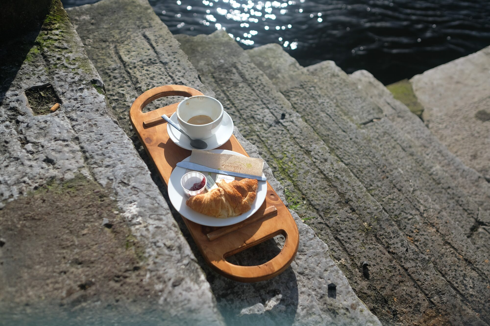
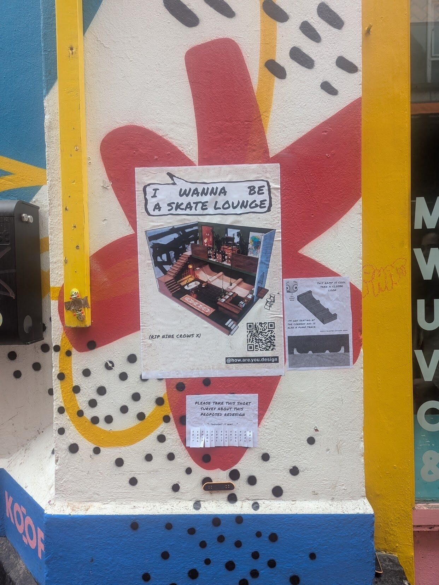

Creative public engagement
Playful consultations, workshops and installations that help people contribute to decisions, with their responses brought together into useful findings.
I help organisations understand people, create meaningful experiences and improve how places, programmes and services work. Research, spatial thinking and playful participation turn a question into something we can explore and act on.
Have a brief, a challenge or an early idea? A free introductory conversation helps us work out where I can help.
Find a starting point below. Every project takes its own shape.
Help people discover your programme, feel welcome and find meaningful ways to take part.
Audience research, experience design, participatory programmes and creative public engagement.
A playful consultation for a new library: inviting people to share what they need, gathering their responses into themes and recommendations, and building interest in what comes next.
An illustrative starting pointBring local knowledge into decisions about places and services.
Creative consultation, co-design workshops, participant journey mapping and small-scale testing.
A pop-up activity in a town square where people can map everyday barriers, try out ideas and contribute to a clear brief for future improvements.
An illustrative starting pointUnderstand what helps people take part and where a service could work better.
Service design, accessible workshop formats, research with participants and programme development.
Working with a community centre to explore the journey from hearing about an activity to attending, then testing improvements to invitations, arrival and participation.
An illustrative starting pointCreate experiences that connect your space with the people you want to welcome.
Experience design, workshop programmes, events and spatial interventions.
A bookshop programme built around a particular audience, with a welcoming format, facilitated activities and feedback to shape future sessions.
An illustrative starting point
A stage shaped around the theme of Roots, brought from sketches through construction and into the live event.
See the TEDxGranada project ↗Different approaches, brought together around the purpose of your project.
Playful consultations, workshops and installations that help people contribute to decisions, with their responses brought together into useful findings.
Shape how people encounter a place or programme, from the first invitation and arrival to taking part and what stays with them afterwards.
Explore who you reach, who is missing and what gets in the way, then develop relevant ways to invite people in and build lasting relationships.
Understand a service from the perspectives of the people using and delivering it. Map the journey, identify barriers and test practical improvements.
Completed work and public experiments that show how I move between research, ideas and delivery.

BuiltObserving how people use a place, testing a response and making something that fits into everyday life.
Read the project ↗
Research + proposalA spatial idea taken into the street through posters and a playful survey. The proposed interior remains unbuilt.
Read the project ↗Start with a free conversation about your aims, audience and context.
Agree the work, outputs, timing and fee in a tailored proposal.
Research with people, develop ideas and try them at an appropriate scale.
Bring the findings and designs together with clear recommendations for what happens next.
What would you like to make possible?
Arrange a free consultation ↗Looking to develop an artistic or community project together? Explore art + collaboration →